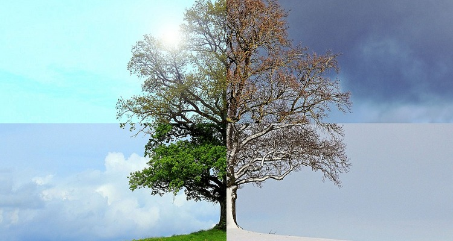

Verão e Inverno
Verão
O verão é uma das quatro estações do ano, caracterizada por ser a estação mais quente. Neste período, as temperaturas permanecem elevadas e os dias são mais longos do que os dias das outras estações. Geralmente, o verão é também o período do ano reservado às férias.
O verão começa em 21 ou 22 de dezembro e acaba em 20 ou 21 de março. Esta estação, que vem depois da primavera e antes do outono, é caracterizada pelos dias mais longos do que as noites, pelo clima quente e pela rápida evaporação da água acumulada nos solos.
Inverno
O inverno é a estação mais fria das quatro estações do ano e é comum que durante esta época, em países mais perto dos polos, as temperaturas fiquem abaixo de 0 ºC e que ocorram fenômenos como a queda de neve e a formação de geada.
Geralmente, ele ocorre em 22 de junho, mas pode ocorrer entre 21 e 23. Neste ano, será às 06h13 desta terça (21). A estação termina em 22 de setembro às 22h04, segundo o Instituto Nacional de Meteorologia (Inmet).
